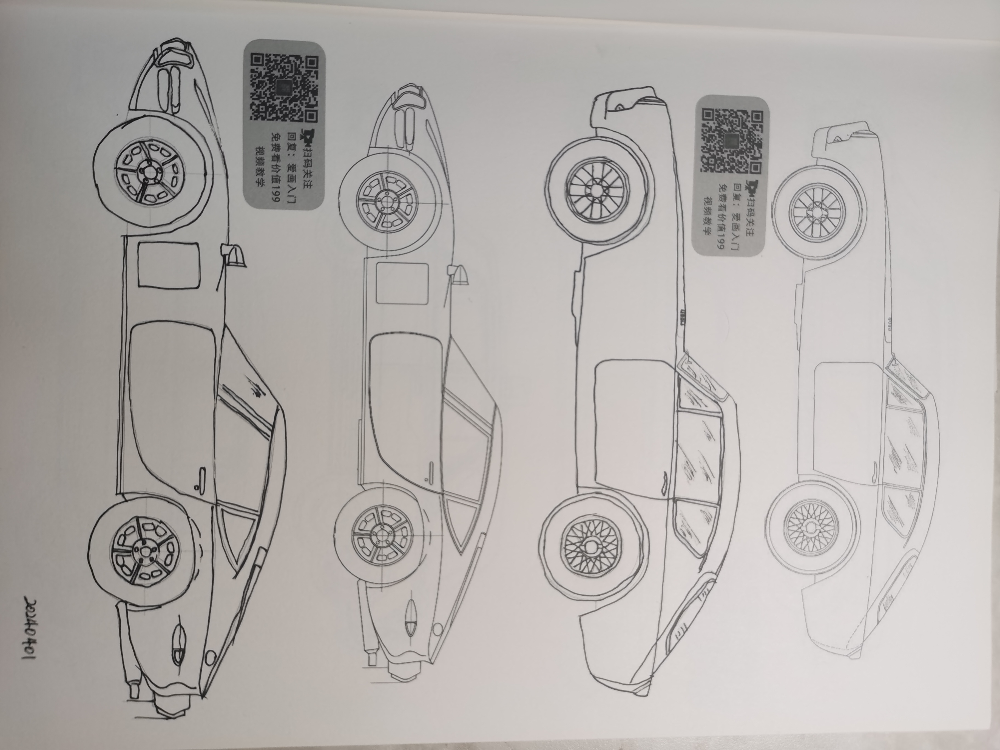
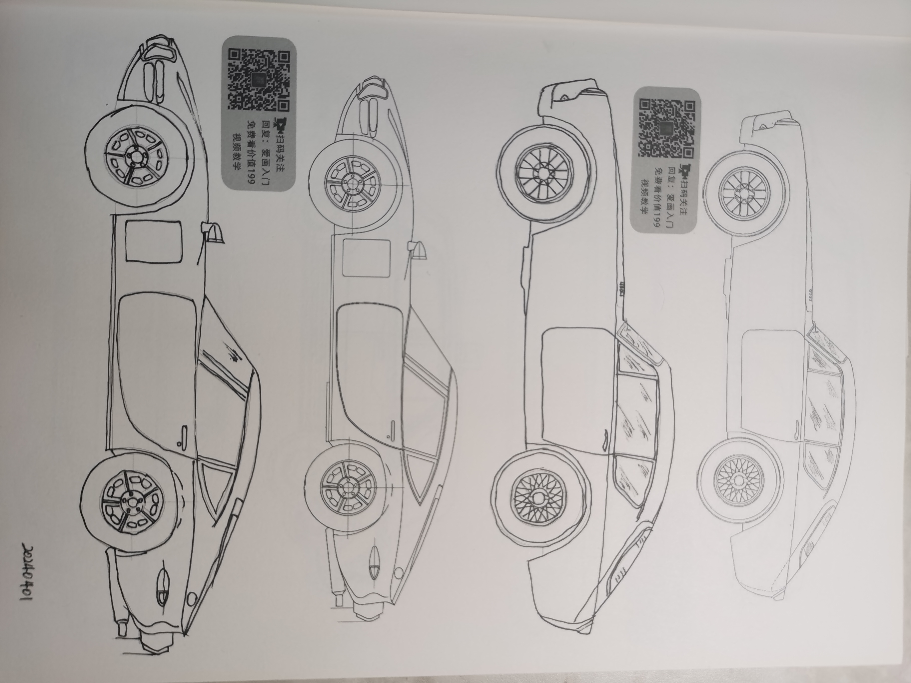

1.眯眼观察
这里写正文,加粗通过strong来实现
2.临摹的作用
-
1.建立现实的心理预期:首先需要能顺利完成临摹,后面创作才会不受到限制
-
2.明确临摹的目的:临摹主要用于养成整体观察和对比的习惯,掌握打型和选色的技能.
-
3.临摹与创作尝试并行:学习绘画的本质是想要表达自己的感觉,而不是临摹机器,所以临摹和创作并行.
1.临摹练习
注意:要移动手腕绘制(类似于毛笔的感觉),而不是移动手指


2.辩色练习
注意:要移动手腕绘制(类似于毛笔的感觉),而不是移动手指